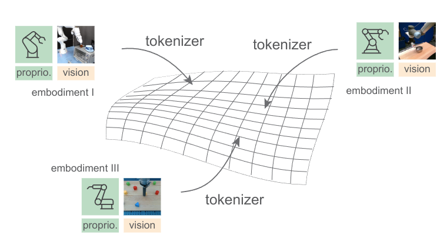
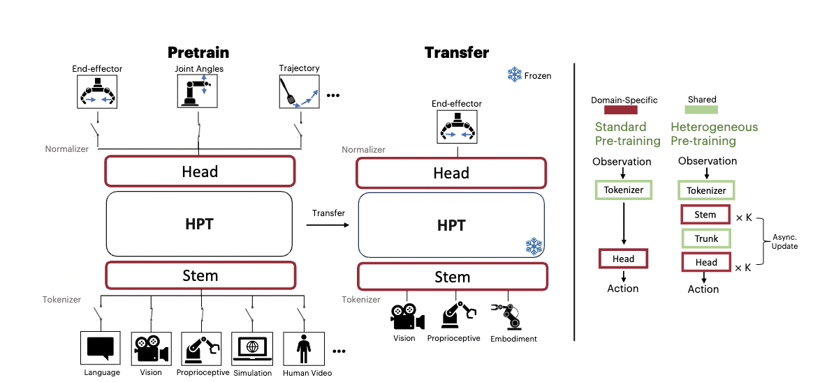
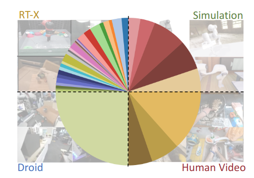
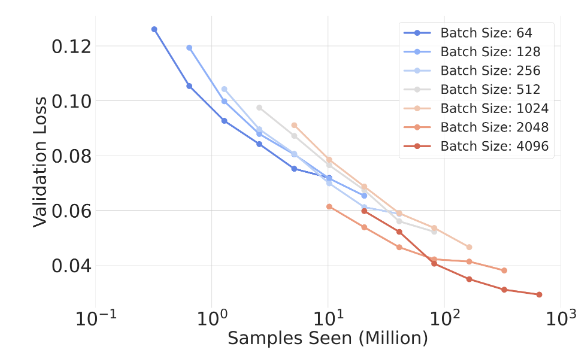

One of the key roadblocks for training generalist robotic models today is heterogeneity. Previous robot learning methods often collect data to train with one specific embodiment for one task, which is expensive and prone to overfitting. This work studies the problem of learning policy representations through heterogeneous pre-training on robot data across different embodiments and tasks at scale. We propose Heterogeneous Pre-trained Transformers (HPT), which pre-train a large, shareable trunk of a policy neural network to learn a task and embodiment agnostic shared representation.
This general architecture aligns the specific proprioception and vision inputs from distinct embodiments to a short sequence of tokens and then processes such tokens to map to control robots for different tasks. Leveraging the recent large-scale multi-embodiment real-world robotic datasets as well as simulation datasets and human video datasets, our experiments show that pre-training robotic policies across heterogeneity can exhibit scaling behaviors, to the extent of 50 distinct datasets and 1 billion parameter models. Pre-trained HPTs outperform previous baselines and enhance the finetuned policy performance on many unseen downstream tasks and environments in simulator benchmarks and real-world settings.



